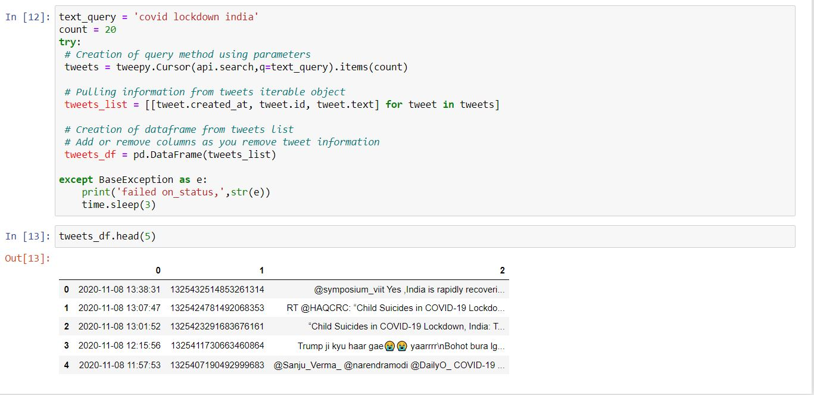
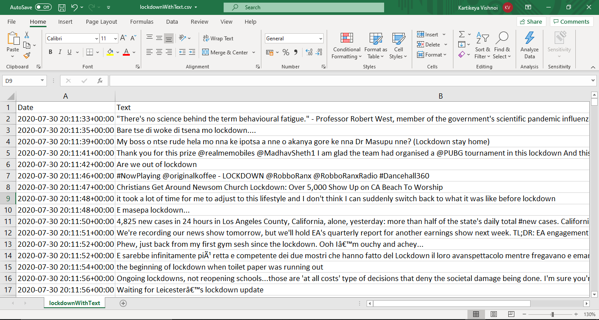
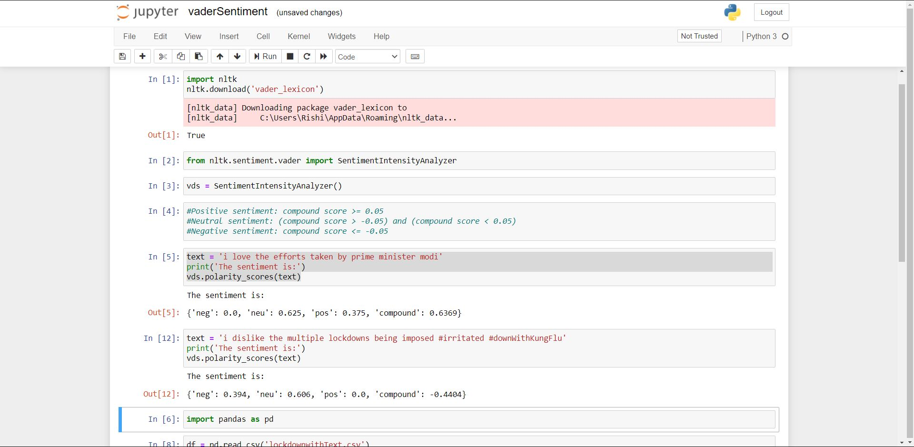
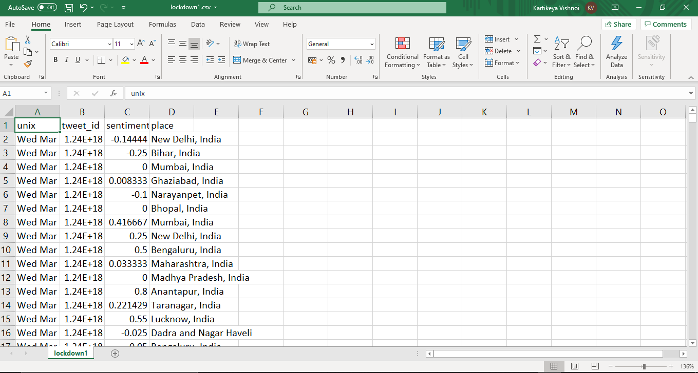

Sentiment Analysis
- The data is first scraped from Twitter using the TweePY python script and Twitter Developer credentials using keywords such as "Covid-19 India", "India Covid Lockdown" etc. and specifying the Indian Geolocation to get India based tweets.


- After the data has been scraped for ID’s and text of the tweet along with GeoLocations, it is run through another python program, vaderSentiment that is a part of the NLTK library and is used to assign sentiment scores to text.


- Once sentiment scores are assigned, we can get rid of the text column in the dataset and maintain the tweet ID’s (which can be used to fetch the text again if needed).
- Then we can perform analysis through visualization in tableau to understand peoples sentiments during various lockdown phases in the country.